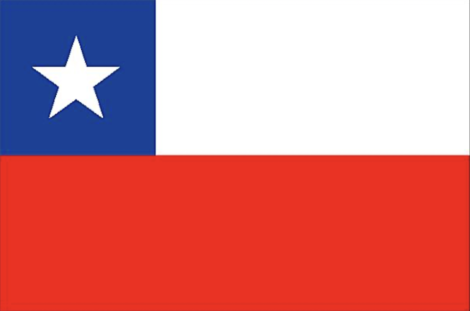
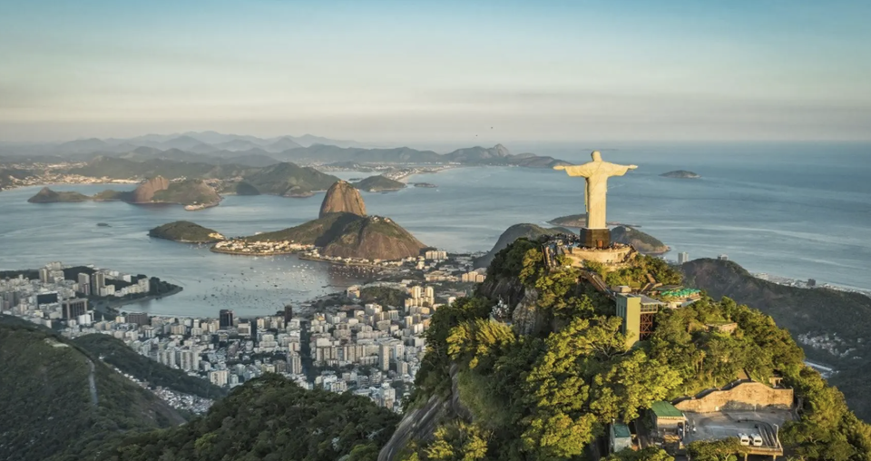
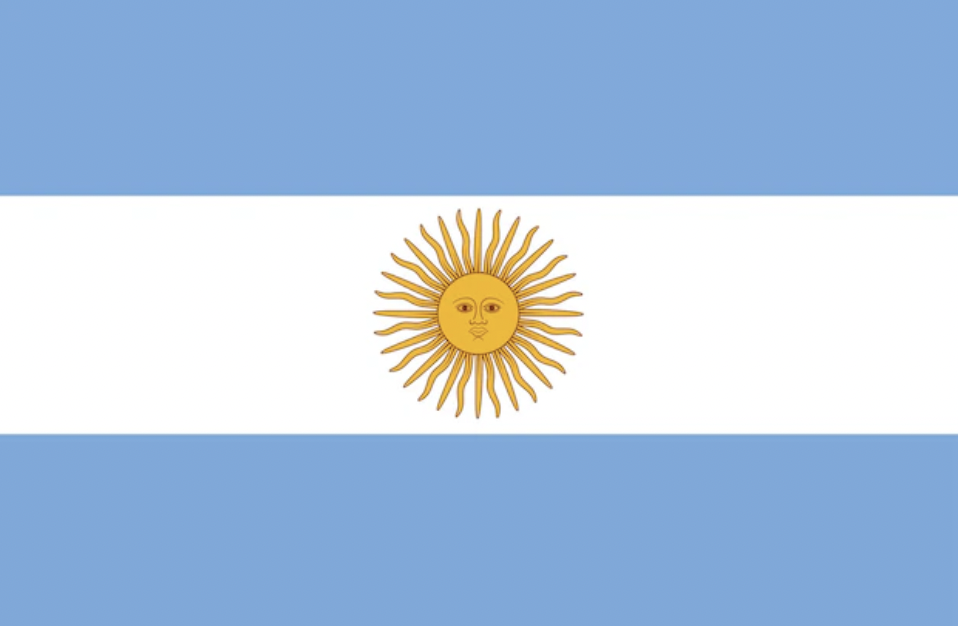
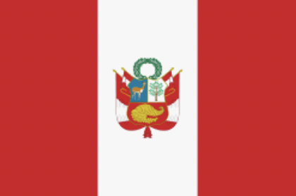
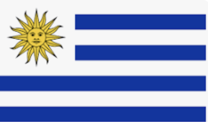
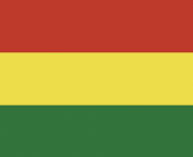

Chile, Santiago
Academic exchange at the Universidad Andres Bello in Santiago
Sightseeing: Atacama Desert, Valparaiso, Vina del Mar, Pucon, Pichilemu, Concon, Valle Nevado...

Brazil, Rio de Janeiro & Buzios
Travel to Brazil's capital and then to a small seaside town
Discover mythical sites such as Corcovado, Ipanema beach and Caipirinha.

Argentina, Buenos Aires
Visit Argentina's capital and its working-class districts
We have visited: San Telmo, Recoleta, Museo de Bellas Artes, Palacio Paz...
.

Peru, Machu Picchu
Due to a coup d'état during our trip, we were stranded at Machu Picchu for a week.
However, we were still able to visit one of the Seven Wonders of the World, as well as the city
of Cusco

Uruguay, Colonia del Sacramento
Travel not to the capital, but to a small village called Colonia del Sacramento
This small town is very charming, and we were able to sample the local specialities!

Bolivia, Uyuni
We were lucky enough to discover Bolivia, a country with incredible landscapes!
We discovered the Salar of Uyuni and its heavenly atmosphere, as well as the town of Uyuni.